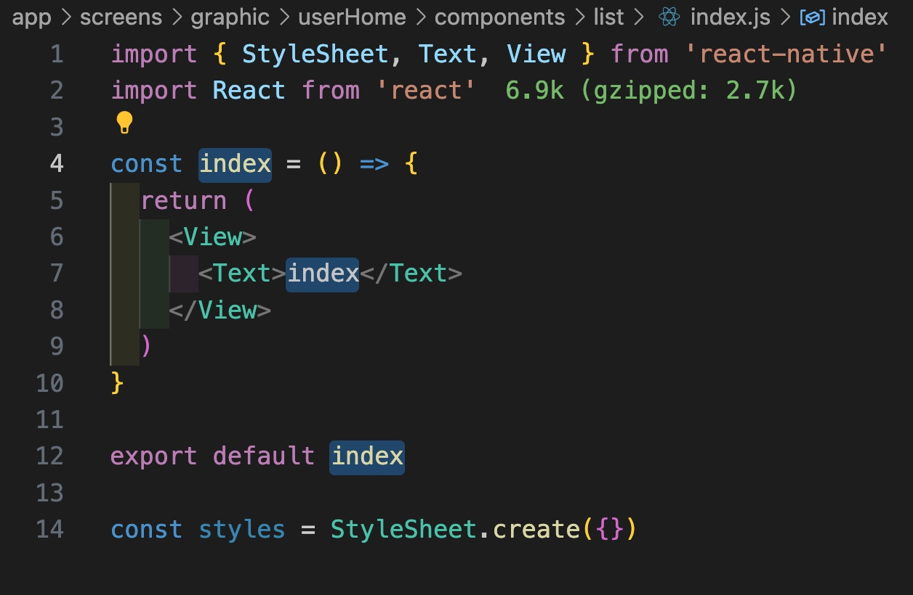

<!DOCTYPE html>
<html lang="en-us">
  <head>
    <meta charset="utf-8">
    <meta http-equiv="X-UA-Compatible" content="IE=edge,chrome=1">
    
    <title>React Native 在VSCode编码提效 | zyestin</title>
    <meta name="viewport" content="width=device-width,minimum-scale=1">
    <meta name="description" content="插件 代码智能提示 copilot
触发内联建议 Option (⌥)&#43;\ https://docs.github.com/zh/copilot/configuring-github-copilot/configuring-github-copilot-in-your-environment?tool=vscode#keyboard-shortcuts-for-macos
(键联提示)代码片段
ES7&#43; React/Redux/React-Native snippets massCode assistant (配合打开massCode App使用) 标签修改 自动首尾同步 Auto Rename Tag
拼写检测 Code Spell Checker
格式化 prettier
提升阅读感受
Gitlens 悬停查看代码改动人 Material Icon Theme / vscode-icons 侧边导航区 目录展示icon indent-rainbow 标签开闭连线 Image Preview 在图片路径引用行 左侧展示icon code snippets React/Redux/React-Native snippets
指令说明：
https://github.com/ults-io/vscode-react-javascript-snippets/blob/HEAD/docs/Snippets.md
优点：
对常用的hooks支持的简直完美
可以试试输入useeff...。 会提示useEffectSnippet，enter后挨个填词，tab切换光标，set方法自动驼峰，简直完美！ 使用rnfes创建组件，会根据文件名 命名组件 想根据英文记忆一下快捷指令名称，可以参考 Fullstack React/React Native snippets
对快捷指令 都有英文解释
Mac、VSC快捷键 Mac 系统自带
(shift&#43;) ctrl&#43; (option&#43;) f/b (shift&#43;) ctrl&#43; p/n VSC 更改了上述快捷键对应的指令，非常糟糕。可以调整下如下 VSC Next Change （Important）">
    <meta name="generator" content="Hugo 0.117.0">
    
    
    
    
      <meta name="robots" content="noindex, nofollow">
    

    
<link rel="stylesheet" href="/zyestin/ananke/css/main.min.css" >


    
    
    
      

    

    
    
    <meta property="og:title" content="React Native 在VSCode编码提效" />
<meta property="og:description" content="插件 代码智能提示 copilot
触发内联建议 Option (⌥)&#43;\ https://docs.github.com/zh/copilot/configuring-github-copilot/configuring-github-copilot-in-your-environment?tool=vscode#keyboard-shortcuts-for-macos
(键联提示)代码片段
ES7&#43; React/Redux/React-Native snippets massCode assistant (配合打开massCode App使用) 标签修改 自动首尾同步 Auto Rename Tag
拼写检测 Code Spell Checker
格式化 prettier
提升阅读感受
Gitlens 悬停查看代码改动人 Material Icon Theme / vscode-icons 侧边导航区 目录展示icon indent-rainbow 标签开闭连线 Image Preview 在图片路径引用行 左侧展示icon code snippets React/Redux/React-Native snippets
指令说明：
https://github.com/ults-io/vscode-react-javascript-snippets/blob/HEAD/docs/Snippets.md
优点：
对常用的hooks支持的简直完美
可以试试输入useeff...。 会提示useEffectSnippet，enter后挨个填词，tab切换光标，set方法自动驼峰，简直完美！ 使用rnfes创建组件，会根据文件名 命名组件 想根据英文记忆一下快捷指令名称，可以参考 Fullstack React/React Native snippets
对快捷指令 都有英文解释
Mac、VSC快捷键 Mac 系统自带
(shift&#43;) ctrl&#43; (option&#43;) f/b (shift&#43;) ctrl&#43; p/n VSC 更改了上述快捷键对应的指令，非常糟糕。可以调整下如下 VSC Next Change （Important）" />
<meta property="og:type" content="article" />
<meta property="og:url" content="https://zyestin.github.io/zyestin/posts/rn/vscode-efficient/" /><meta property="article:section" content="posts" />
<meta property="article:published_time" content="2023-11-01T12:00:11+08:00" />
<meta property="article:modified_time" content="2023-11-01T12:00:11+08:00" />
<meta itemprop="name" content="React Native 在VSCode编码提效">
<meta itemprop="description" content="插件 代码智能提示 copilot
触发内联建议 Option (⌥)&#43;\ https://docs.github.com/zh/copilot/configuring-github-copilot/configuring-github-copilot-in-your-environment?tool=vscode#keyboard-shortcuts-for-macos
(键联提示)代码片段
ES7&#43; React/Redux/React-Native snippets massCode assistant (配合打开massCode App使用) 标签修改 自动首尾同步 Auto Rename Tag
拼写检测 Code Spell Checker
格式化 prettier
提升阅读感受
Gitlens 悬停查看代码改动人 Material Icon Theme / vscode-icons 侧边导航区 目录展示icon indent-rainbow 标签开闭连线 Image Preview 在图片路径引用行 左侧展示icon code snippets React/Redux/React-Native snippets
指令说明：
https://github.com/ults-io/vscode-react-javascript-snippets/blob/HEAD/docs/Snippets.md
优点：
对常用的hooks支持的简直完美
可以试试输入useeff...。 会提示useEffectSnippet，enter后挨个填词，tab切换光标，set方法自动驼峰，简直完美！ 使用rnfes创建组件，会根据文件名 命名组件 想根据英文记忆一下快捷指令名称，可以参考 Fullstack React/React Native snippets
对快捷指令 都有英文解释
Mac、VSC快捷键 Mac 系统自带
(shift&#43;) ctrl&#43; (option&#43;) f/b (shift&#43;) ctrl&#43; p/n VSC 更改了上述快捷键对应的指令，非常糟糕。可以调整下如下 VSC Next Change （Important）"><meta itemprop="datePublished" content="2023-11-01T12:00:11+08:00" />
<meta itemprop="dateModified" content="2023-11-01T12:00:11+08:00" />
<meta itemprop="wordCount" content="140">
<meta itemprop="keywords" content="react-native," /><meta name="twitter:card" content="summary"/>
<meta name="twitter:title" content="React Native 在VSCode编码提效"/>
<meta name="twitter:description" content="插件 代码智能提示 copilot
触发内联建议 Option (⌥)&#43;\ https://docs.github.com/zh/copilot/configuring-github-copilot/configuring-github-copilot-in-your-environment?tool=vscode#keyboard-shortcuts-for-macos
(键联提示)代码片段
ES7&#43; React/Redux/React-Native snippets massCode assistant (配合打开massCode App使用) 标签修改 自动首尾同步 Auto Rename Tag
拼写检测 Code Spell Checker
格式化 prettier
提升阅读感受
Gitlens 悬停查看代码改动人 Material Icon Theme / vscode-icons 侧边导航区 目录展示icon indent-rainbow 标签开闭连线 Image Preview 在图片路径引用行 左侧展示icon code snippets React/Redux/React-Native snippets
指令说明：
https://github.com/ults-io/vscode-react-javascript-snippets/blob/HEAD/docs/Snippets.md
优点：
对常用的hooks支持的简直完美
可以试试输入useeff...。 会提示useEffectSnippet，enter后挨个填词，tab切换光标，set方法自动驼峰，简直完美！ 使用rnfes创建组件，会根据文件名 命名组件 想根据英文记忆一下快捷指令名称，可以参考 Fullstack React/React Native snippets
对快捷指令 都有英文解释
Mac、VSC快捷键 Mac 系统自带
(shift&#43;) ctrl&#43; (option&#43;) f/b (shift&#43;) ctrl&#43; p/n VSC 更改了上述快捷键对应的指令，非常糟糕。可以调整下如下 VSC Next Change （Important）"/>

	
  </head>

  <body class="ma0 avenir bg-near-white">

    
   
  

  <header>
    <div class="bg-black">
      <nav class="pv3 ph3 ph4-ns" role="navigation">
  <div class="flex-l justify-between items-center center">
    <a href="/zyestin/" class="f3 fw2 hover-white no-underline white-90 dib">
      
        zyestin
      
    </a>
    <div class="flex-l items-center">
      

      
      
<div class="ananke-socials">
  
</div>

    </div>
  </div>
</nav>

    </div>
  </header>


    <main class="pb7" role="main">
      
  
  <article class="flex-l flex-wrap justify-between mw8 center ph3">
    <header class="mt4 w-100">
      <aside class="instapaper_ignoref b helvetica tracked">
          
        POSTS
      </aside>
      


  <div id="sharing" class="mt3 ananke-socials">
    
  </div>


      <h1 class="f1 athelas mt3 mb1">React Native 在VSCode编码提效</h1>
      
      
      
      <time class="f6 mv4 dib tracked" datetime="2023-11-01T12:00:11+08:00">November 1, 2023</time>
      

      
      
    </header>
    <div class="nested-copy-line-height lh-copy serif f4 nested-links mid-gray pr4-l w-two-thirds-l"><p>
</p>
<h2 id="插件">插件</h2>
<ul>
<li>代码智能提示
copilot<br>
触发内联建议 Option (⌥)+\</li>
</ul>
<blockquote>
<p><a href="https://docs.github.com/zh/copilot/configuring-github-copilot/configuring-github-copilot-in-your-environment?tool=vscode#keyboard-shortcuts-for-macos">https://docs.github.com/zh/copilot/configuring-github-copilot/configuring-github-copilot-in-your-environment?tool=vscode#keyboard-shortcuts-for-macos</a></p>
</blockquote>
<ul>
<li>
<p>(键联提示)代码片段</p>
<ul>
<li>ES7+ React/Redux/React-Native snippets</li>
<li>massCode assistant (配合打开massCode App使用)</li>
</ul>
</li>
<li>
<p>标签修改 自动首尾同步
Auto Rename Tag</p>
</li>
<li>
<p>拼写检测
Code Spell Checker</p>
</li>
<li>
<p>格式化
prettier</p>
</li>
<li>
<p>提升阅读感受</p>
<ul>
<li>Gitlens 悬停查看代码改动人</li>
<li>Material Icon Theme / vscode-icons 侧边导航区 目录展示icon</li>
<li>indent-rainbow 标签开闭连线</li>
<li>Image Preview 在图片路径引用行 左侧展示icon</li>
</ul>
</li>
</ul>
<h2 id="code-snippets">code snippets</h2>
<p><a href="https://marketplace.visualstudio.com/items?itemName=dsznajder.es7-react-js-snippets">React/Redux/React-Native snippets</a></p>
<p>指令说明：<br>
<a href="https://github.com/ults-io/vscode-react-javascript-snippets/blob/HEAD/docs/Snippets.md">https://github.com/ults-io/vscode-react-javascript-snippets/blob/HEAD/docs/Snippets.md</a></p>
<p>优点：</p>
<ul>
<li>
<p>对常用的hooks支持的简直完美<br>
可以试试输入<code>useeff...</code>。
会提示<code>useEffectSnippet</code>，enter后挨个填词，tab切换光标，<!-- raw HTML omitted --><strong>set方法自动驼峰</strong><!-- raw HTML omitted -->，简直完美！
</p>
</li>
<li>
<p>使用<code>rnfes</code>创建组件，会根据文件名 命名组件
</p>
</li>
</ul>
<blockquote>
<p>想根据英文记忆一下快捷指令名称，可以参考
<a href="https://marketplace.visualstudio.com/items?itemName=walter-ribeiro.full-react-snippets">Fullstack React/React Native snippets</a><br>
对快捷指令 都有英文解释</p>
</blockquote>
<h2 id="macvsc快捷键">Mac、VSC快捷键</h2>
<h3 id="mac">Mac</h3>
<p>系统自带</p>
<ul>
<li>(shift+) ctrl+ (option+) f/b</li>
<li>(shift+) ctrl+ p/n</li>
</ul>
<blockquote>
<p>VSC 更改了上述快捷键对应的指令，非常糟糕。可以调整下如下


</p>
</blockquote>
<h3 id="vsc">VSC</h3>
<ul>
<li>
<p>Next Change  （<strong>Important</strong>）</p>
</li>
<li>
<p>terminal、editor互切</p>
<ul>
<li>focus到终端: <code>cmd+j</code></li>
<li>focus到editor:
<ul>
<li><code>(ctrl+)shift+tab</code></li>
<li><code>cmd+1</code></li>
</ul>
</li>
</ul>
</li>
<li>
<p>光标移动到函数头尾、标签头尾</p>
<ul>
<li><code>cmd+shift+\</code>: 跳转至<code>{</code> <code>}</code>、跳转至<code>&lt;</code> <code>&gt;</code></li>
</ul>
</li>
<li>
<p>选中 括号内代码</p>
</li>
</ul>
<p>支持不断 扩张/收缩 选中</p>
<pre tabindex="0"><code>  {
    &#34;key&#34;: &#34;ctrl+s&#34;,
    &#34;command&#34;: &#34;editor.action.smartSelect.expand&#34;,
    &#34;when&#34;: &#34;editorTextFocus&#34;
  },
  {
    &#34;key&#34;: &#34;ctrl+shift+s&#34;,
    &#34;command&#34;: &#34;editor.action.smartSelect.shrink&#34;,
    &#34;when&#34;: &#34;editorTextFocus&#34;
  },
</code></pre><ul>
<li>光标移动多行
<ul>
<li>
<p>插件line-jumper<br>
配成<code>(shift+)ctrl+option+p/n</code></p>
</li>
<li>
<p>插件Space Block Jumper<br>
跳转到临近的空行(选中)</p>
</li>
</ul>
<blockquote>
<p>居然无法设置 这几个键组合<code>ctrl+cmd+p</code></p>
</blockquote>
</li>
</ul>
<p></p>
<ul>
<li>Next Problem
<ul>
<li>cmd+(shift+)'</li>
</ul>
</li>
</ul>
<blockquote>
<p>常用于写代码时要import，故意写error，然后在顶部import结束后，再快速跳回error处继续写代码</p>
</blockquote>
<ul>
<li>导航区(explorer view)定位当前编辑文件</li>
</ul>
<pre tabindex="0"><code>  {
    &#34;key&#34;: &#34;shift+cmd+j&#34;,
    &#34;command&#34;: &#34;workbench.files.action.showActiveFileInExplorer&#34;,
    &#34;when&#34;: &#34;editorFocus&#34;
  }
</code></pre><ul>
<li>其它更改VSCode的自定义快捷键<br>
更新于 2023.07.26 <a href="media/16878480327198/keybindings.json">keybindings</a></li>
</ul>
<blockquote>
<p>这是一份我常用的、好用的VSC自定义快捷键备份。</p>
<p>为什么要改？<br>
因为，当Mac的快捷键与VSC冲突时，当好用的插件快捷键与VSC冲突时，当VSC自带的快捷键失灵时，一般就需要更改VSC的 <code>keybindings.json</code>文件了</p>
</blockquote>
<ul class="pa0">
  
   <li class="list di">
     <a href="/zyestin/tags/react-native/" class="link f5 grow no-underline br-pill ba ph3 pv2 mb2 dib black sans-serif">react-native</a>
   </li>
  
</ul>
<div class="mt6 instapaper_ignoref">
      
      
      </div>
    </div>

    <aside class="w-30-l mt6-l">


  <div class="bg-light-gray pa3 nested-list-reset nested-copy-line-height nested-links">
    <p class="f5 b mb3">Related</p>
    <ul class="pa0 list">
	   
	     <li  class="mb2">
          <a href="/zyestin/posts/rn/waterfall-list-autoscroll/"> 实现 FlatList 、flashList、masonryFlashList 各种列表的自动滚动动画</a>
        </li>
	    
	     <li  class="mb2">
          <a href="/zyestin/posts/rn/multi-gestture-sticker/">RN 动画 - 缩放、旋转、拖拽</a>
        </li>
	    
	     <li  class="mb2">
          <a href="/zyestin/posts/rn/readme/">React Native 开发沉淀</a>
        </li>
	    
	     <li  class="mb2">
          <a href="/zyestin/posts/rn/code-standards/">代码规范</a>
        </li>
	    
	     <li  class="mb2">
          <a href="/zyestin/posts/rn/base-components/">封装常用基础组件</a>
        </li>
	    
	     <li  class="mb2">
          <a href="/zyestin/posts/rn/douyin-label-input/">模仿抖音、小红书 输入 #标签 高亮</a>
        </li>
	    
	     <li  class="mb2">
          <a href="/zyestin/posts/rn/waterfall-list-horizontal/">横向 瀑布流列表</a>
        </li>
	    
    </ul>
</div>

</aside>

  </article>

    </main>
    <footer class="bg-black bottom-0 w-100 pa3" role="contentinfo">
  <div class="flex justify-between">
  <a class="f4 fw4 hover-white no-underline white-70 dn dib-ns pv2 ph3" href="https://zyestin.github.io/zyestin/" >
    &copy;  zyestin 2023 
  </a>
    <div>
<div class="ananke-socials">
  
</div>
</div>
  </div>
</footer>

  </body>
</html>
